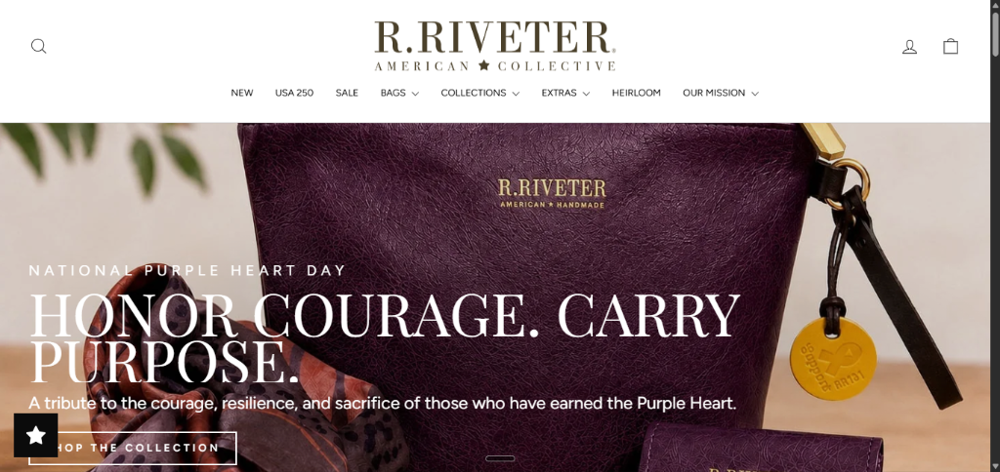

Transcending the Sterile Catalog: Creating Emotional Warmth for Handcrafted Heritage Goods
R. Riveter is an American collective brand dedicated to providing flexible, mobile income to military spouses through the production of handcrafted canvas and leather bags. While standard isolated studio packshots on white backgrounds serve essential catalog requirements, they often feel cold, clinical, and disconnected from the everyday lifestyle of their audience.
Conducting constant on-location photoshoots across styled residential interiors, sunlit studies, and outdoor parks is logistically demanding and cost-prohibitive. The core challenge was to take standard isolated studio product shots and composite them seamlessly into photorealistic, warm lifestyle settings—ensuring that every light ray, table reflection, contact shadow, and ambient reflection aligns with absolute optical accuracy.
Light Direction & Color Temperature
Overcoming the flat, uniform strobe lighting of studio packshots by re-sculpting directional sunlight, soft window falloff, and warm color temperature gradation.
Perspective & Contact Physics
Constructing multi-tier contact shadows, ambient occlusion, and subtle surface micro-reflections to physically ground the bag onto wood grain surfaces.
The Hybrid AI & Photoshop Workflow: Creating Photorealistic Staged Shoots Without Studio Reshoots
To achieve 100% realistic commercial product staging, I combined generative AI scene synthesis with high-end manual Adobe Photoshop compositing. This hybrid pipeline preserves 100% of the authentic physical product (stitching, military-grade fabric, brass hardware, brand patches) while placing it into bespoke, high-converting lifestyle environments.
Vector Pen Masking & Edge Decontamination
Extracted the raw studio packshot with sub-pixel Pen Tool vector paths. Removed white studio light fringes and edge halos to ensure clean optical blending into dark and warm environments.
Generative AI Contextual Scene Staging
Synthesized tailored environments (sunlit home study desks with leather journals and artisan mugs; outdoor park benches with organic foliage) with calibrated focal lengths (50mm/85mm f/1.8), camera angles, and solar vectors.
Spatial & 3D Horizon Plane Matching
Matched perspective vanishing points, eye-level horizon lines, and ground planes between the product capture and the background to ensure the bag physically rests with realistic weight.
3-Tier Shadow Physics Engineering
Hand-painted three distinct shadow passes in Photoshop: (1) high-density Contact Occlusion under bottom seams, (2) soft Ambient Diffusion falloff, and (3) elongated Directional Cast Shadows matching the primary light source.
Directional Light Wrapping & Specular Sculpting
Painted custom Dodge/Burn and Screen blend highlights on quilted contours, leather handles, and brass rivets matching the natural angle and golden color temperature of the window sunlight.
Optical Depth Blur & Unified Camera Grain
Applied realistic lens bokeh to background props using Photoshop Tilt-Shift & Field Blur, followed by uniform 35mm film grain overlay to optically fuse the product and background into a single authentic photographic capture.
The Signature Quilted Tote: Studio Packshot vs. Sunlit Desk Lifestyle
Comparing the raw studio cutout against the final staged lifestyle scene. The product was placed on an authentic sun-drenched wooden study desk alongside everyday artifacts—a ceramic coffee mug, wireframe glasses, and a handcrafted leather journal—instantly communicating utility, warmth, and sophistication.
The Olive Quilted Belt Bag: Studio Isolation vs. Parkside Daylight
Demonstrating natural outdoor lighting integration. The olive green quilted belt bag was extracted from studio isolation and integrated onto a weathered outdoor park bench, capturing crisp afternoon daylight, soft wood texture interactions, and lush organic bokeh.
The Embroidered Dandelion Pouch: Studio Packshot vs. Artisan Desk Staging
Highlighting fine needlework and tactile canvas. The handcrafted dandelion pouch was staged in an authentic creative studio setting—paired with a coiled genuine leather strap, ceramic pen container, sketch journal, and morning window sunlight.
High-Velocity E-Commerce Visual Merchandising with Zero Reshoot Friction
By implementing photorealistic product compositing, R. Riveter's digital marketing team gained the ability to generate unlimited high-converting lifestyle assets on demand without scheduling expensive on-location shoots or hiring styling teams.
The resulting assets were deployed seamlessly across storefront homepage banners, product landing pages, email marketing campaigns, and paid social ads—significantly increasing time on page, customer engagement, and conversion rates.